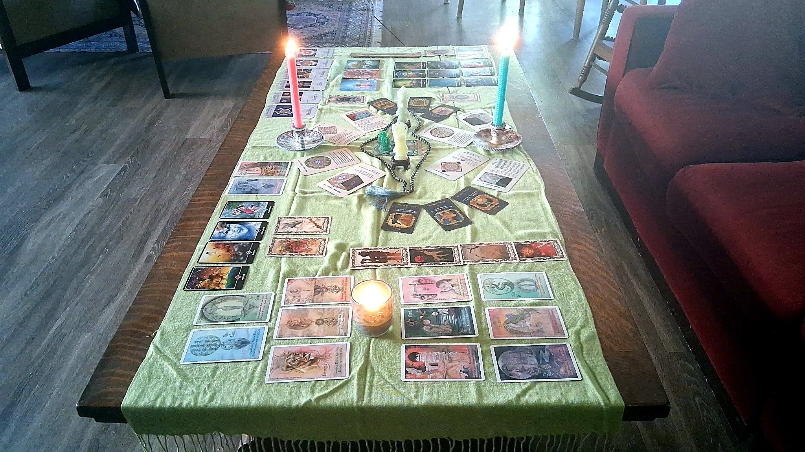
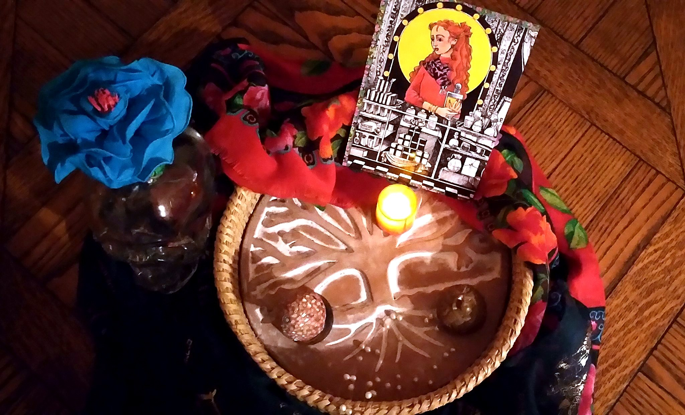

Rituals & Healing
Rituals & Healing Work
Sacred spaces and quiet workings, each one created around your intention.

Personalized Altars
Bespoke altars composed around your intention — for prayer, meditation, remembrance, protection, or transformation.
$350, including video & PDF
Learn more → Book
Healing Rituals
Quiet, intentional rituals that support release, renewal, and balance — for body, mind, and spirit.
$150/hour
Learn more → Book
Reiki Energy Healing
Gentle hands-on and distance Reiki to ease stress and support your body's own natural healing.
$150/hour
Learn more → Book
Guided Meditations
Quiet, guided meditations to still the mind and settle the spirit — for calm, clarity, and better rest.
$150/hour
Learn more → Book